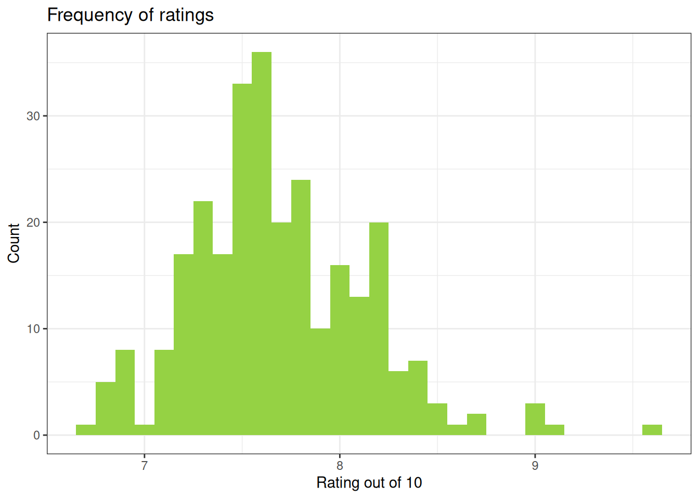
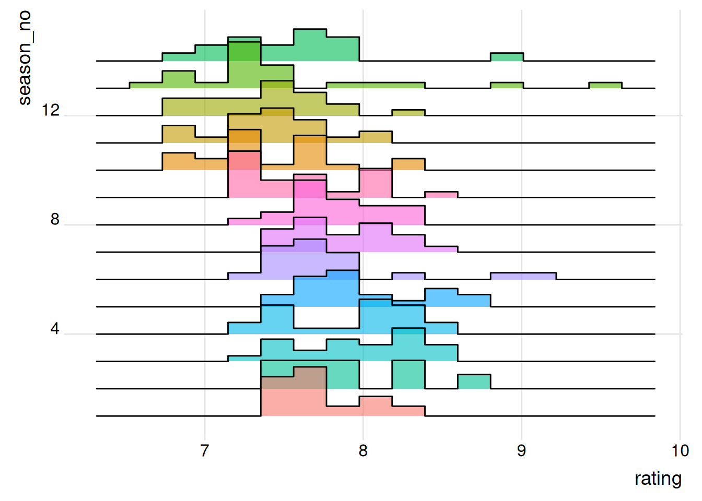
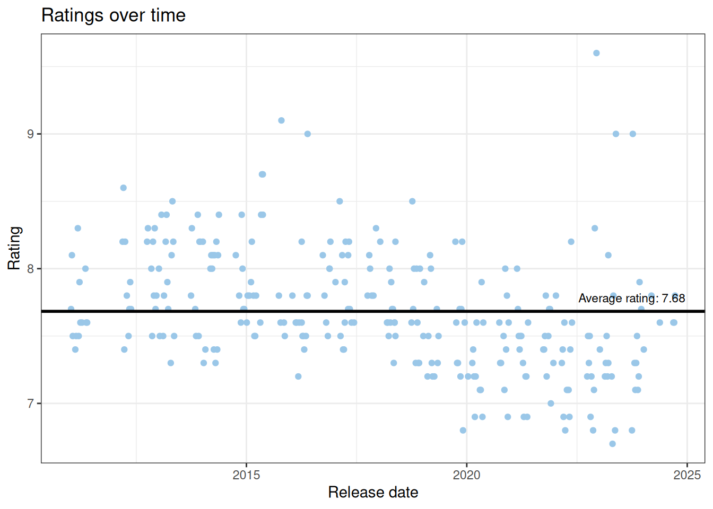
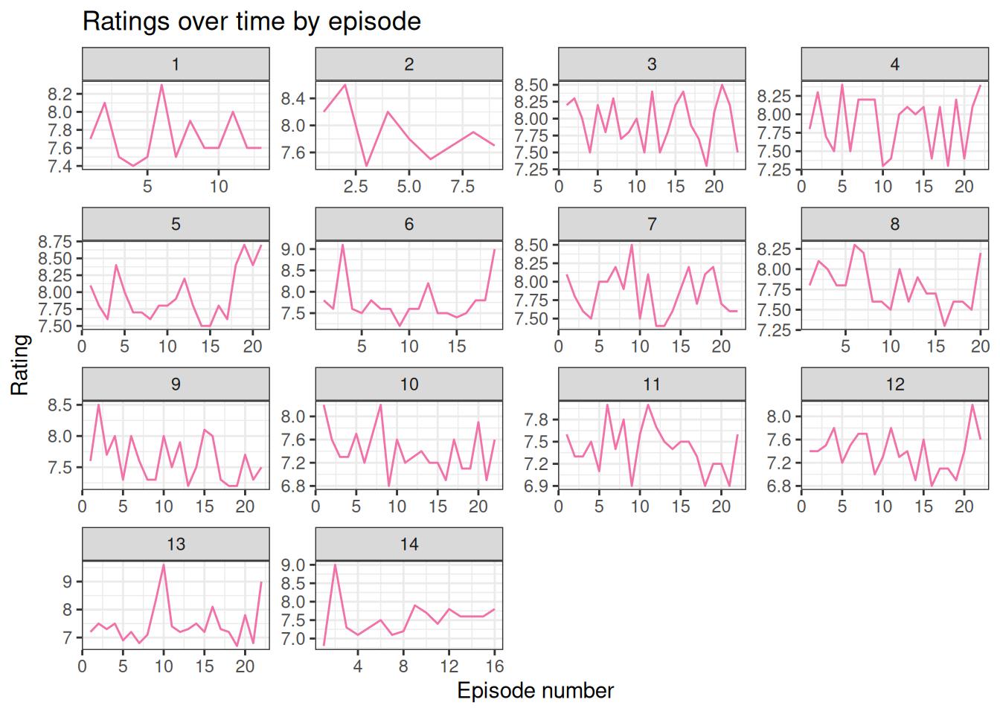
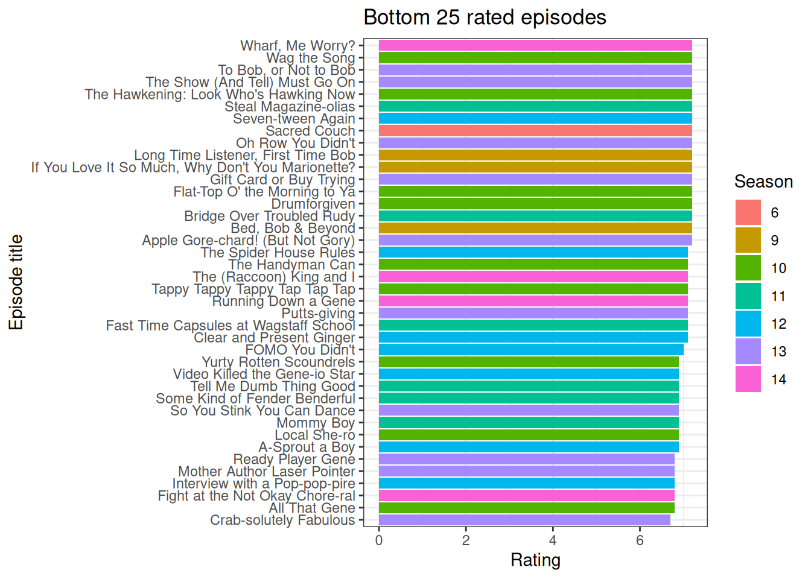
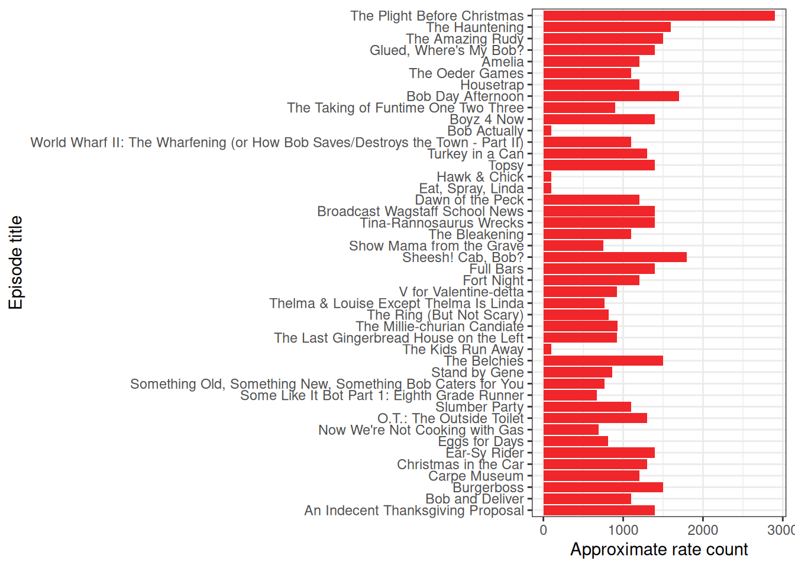
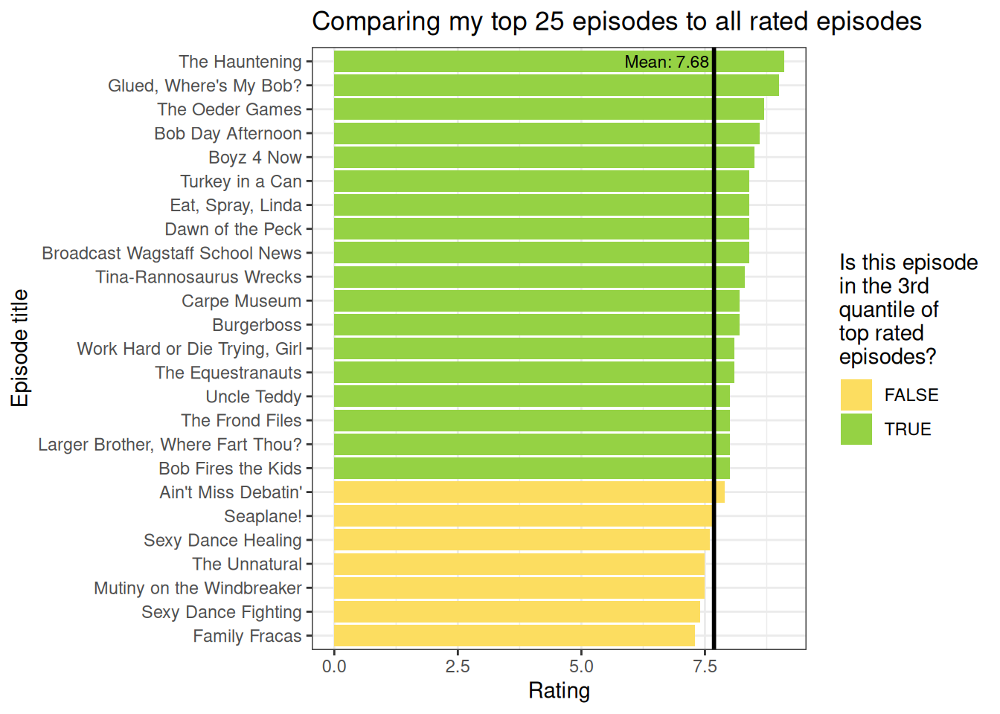

Bob’s Burgers analysis
Bob’s Burgers is a great comfort of show of mine. There’s something endearing about a show about a goofy family. Since I love this show so much, I figured why not mix in data analysis and get the best of both worlds? So get ready to go on this Bob’s Burgers analysis in brief with me!
Tip
So you don’t need to watch the show to get this but it’s a great show so I’d just recommend giving it a watch anyways.
Number of episodes per season
This was just to take a quick peak at if we could compare the episodes over seasons. What jumps out is that seasons 1 & 2 are fairly short. It’s reasonable for pilot seasons to be shorter but a quick search shows that there were fewer episodes in season 2 due to a schedule conflict1. We also see a slight dip in season 14 and that’s likely a result of the SAG-AFTRA writer’s strike in 20232.
Ratings
Frequency of ratings

Summary
Min. 1st Qu. Median Mean 3rd Qu. Max.
6.700 7.400 7.600 7.696 8.000 9.600 We can see from the histogram and summary that most Bob’s Burgers episodes clock in at a 7.7/10 rating.
And of course, why not break down the ratings by season? But I find it kind of difficult to compare the rating of the seasons against one another … maybe there’s a better way to see it?

NULLOh, look at that! In this kind of graph we can see that the distribution of ratings starts to move lower in the later seasons but we can also see very highly rated episodes in seasons 13 and 14.
Ratings over time
This graph looks a little too busy. The other downside with this graph is that it’s hard to tell when a season starts and ends.

We also love a scatter plot when there’s a lot of data points. Here, we see more clumps above the average in the earlier seasons and that they move more under the average in the later seasons. This aligns with the story we see in the ridgeline graph–which makes sense because it’s all the same data.
And here, by adding a fitted linear model, the trend seen in the previous graph is made more apparent.

I figured changing the perspective from release date to episode might show some sort of pattern, e.g., season premieres or finales scoring higher–spoiler it doesn’t seem so. I also figured this would remove the space when there’s breaks between when episodes are released.
Of the 14 seasons of Bob’s Burgers, there are 275 episodes. I’m going to now look at the bottom and top 25 episodes. I recognize that it’s only 9% of the episodes but for now this is just a quick look.
Bottom 25 rated episodes

Unsurprisingly, from what we seen in the graphs above we have some repeate offenders from the later seasons showing up in the bottom 25 rated episodes.
Top 25 rated episodes
However, it seems like a whole mixed bag in the top 25.
Was this episode a season finale?
I always just figured shows like to start off with a bang or end on a great note but maybe that’s not the case. This graph only particularly looked at whether the episode was a season finale and this was a surprising find to me. But it’s not like I’m right often enough anyways.
Count of ratings

Caution
The reason is that it’s approximate is because you can’t see the raw rating counts. For example, you would see 2.7K instead of say 2,794 or whatever so take this graph with a grain of salt because that’s all that was available to me.
So my first thought see the top rated episode and that it was in a later season was that maybe there were fewer ratings and that skewered the average. But here, we see that it was the most rated episode!

My personal top 25 episodes
So now that I’ve seen the top 25 top rated episodes, of course now I’m like … do I fit into an average rater of Bob’s Burgers? I picked my top 25 episodes, in no particular order and see how they compare.
What?! Roughly only half of my top 25 is in the top 25 rated? Ok, but let’s be real Work Hard or Die Trying, Girl has the musical stylings of Carly Simon. CARLY SIMON. I may be blinded by my love of Working Girl and Die Hard and any Bob’s Burgers musical episodes but this hit home to me and is in my constant rerun rotation. If I don’t get off this rant we won’t get anywhere so let’s move on.

Ok, this makes me feel like I’m only off slightly. And that’s fine! If we all fit the same mould or all liked the same things we’d all be boring. But it is good to see I’m not out to lunch here. Realy quick though, Family Fracas is a great episode. How else would we have gotten this great gem:

Credits appearances
Kind of speaking on biases though, maybe I just like these episodes because of a character or writer? Let’s look into that.
Note
I removed the main cast from these plots below because they would obviously all appear in all episodes.

To be fair though, Teddy does appear in a lot of episodes generally … but he is one of my favourite characters. I’m not super surprised at this graph.

Recognizing that some of these folks play multiple voices, I thought H. Jon Benjamin would be higher because he does quite a few voices but I’m not surprised that Teddy’s voice actor would score high due to what we seen in the previous graph.

Looking at the data, it looks like Wendy Molyneux and Lizzie Molyneux-Logelin write in the same episodes.
Here’s a fun table to disply the episode they worked on:
| Season | Episode | Title |
|---|---|---|
| 3 | 3 | Bob Fires the Kids |
| 3 | 21 | Boyz 4 Now |
| 4 | 5 | Turkey in a Can |
| 4 | 12 | The Frond Files |
| 5 | 4 | Dawn of the Peck |
| 7 | 15 | Ain't Miss Debatin' |

Note
Admittedly, I don’t know te difference between a writer and a staff writer so that’s on my to-do list but they were categorized differently so I figured I should separate them.
Final thoughts …
By the end of the day, this is a skewed sample of people who would 1. Most likely enjoy watching Bob’s Burgers and 2. Rate episodes on IMDB so that’s something to keep in mind. It was fun nonetheless to work at some very basic webscraping to pull the data from IMDB, then clean it all up so it was easier to analyze and make these (in my opinion) very beautiful graphs. I guess … you just have to watch Bob’s Burgers to get your own opinion. Happy watching!